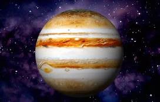
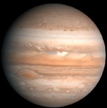

JÚPITER
Júpiter é o maior planeta do Sistema Solar, tanto em diâmetro quanto em massa, e é o quinto mais próximo do Sol. Possui menos de um milésimo da massa solar, contudo tem 2,5 vezes a massa de todos os outros planetas em conjunto. É um planeta gasoso, junto com Saturno, Urano e Netuno
CARACTERÍSTICAS
A temperatura média de Júpiter é de -180 ºC. Nas camadas mais interiores da sua atmosfera, entretanto, há um aumento da temperatura e da pressão, o que se dá de tal forma que os gases comprimidos acabam por se liquefazer, especialmente o hidrogênio. Assim sendo, parte da estrutura desse planeta é formada por hidrogênio líquido. Por conta do aumento contínuo da pressão, acredita-se que Júpiter tenha um núcleo sólido ou formado por um material pastoso muito denso e com temperaturas que chegam a 50.000 ºC.
Júpiter é aproximadamente 10 vezes maior do que o planeta Terra. Esse gigante gasoso tem
142,9 mil quilômetros de diâmetro, além de quase 2 x 1027 kg de massa. Seu volume chega a
ser mais de 1300 vezes superior que o do nosso planeta.
Ainda estabelecendo um
comparativo com a Terra,
temos que os dias em Júpiter transcorrem em apenas 10 horas
terrestres. Os anos, por sua vez, são mais extensos: cada ano em Júpiter corresponde a 12
anos no planeta Terra.
DADOS GERAIS DE JÚPITER
Diâmetro equatorial:142.984 km
Área da superfície:6,14 x 1010km²
Período de translação:12 anos terrestres
Período de rotação:10 horas terrestres
Temperatura média:hidrogênio e hélio predominantes, com pequena parcela de metano, vapor d’água, amônia e outros gases.
Massa:1898,13 x 1024 kg
Densidade:1326 g/cm3
Gravidade:25,92 m/s2
Distância do Sol:778 milhões de quilômetros
Satélites naturais:95 luas conhecidas
Anéis:quatro sistemas de anéis
Curiosidades sobre Júpiter
- Galileu Galilei foi o primeiro astrônomo que observou o planeta Júpiter com um telescópio.
- O planeta orbita a uma velocidade de 13 km/s aproximadamente.
- O enxofre e o fósforo são os elementos que dão cor a Júpiter, junto das nuvens que formam faixas na atmosfera desse planeta.
- Júpiter tem idade aproximada de 4,5 bilhões de anos, o que significa que se formou com o Universo
É verdade que Júpiter tem anéis?
Sim. O planeta Júpiter tem quatro sistemas de anéis, descobertos apenas no ano de 1979, durante a passagem da sonda espacial Voyager 1, da Nasa, pela região. A descoberta foi feita dois anos após o lançamento da missão, que tinha justamente o objetivo de coletar informações de Júpiter e de Saturno.
Os anéis de Júpiter são pouco espessos e de difícil visualização quando não estão sendo iluminados pelos raios solares. Eles são formados por detritos de meteoroides e outros corpos celestes que se fragmentaram no espaço e acabaram sendo atraídos para a órbita do gigante gasoso.